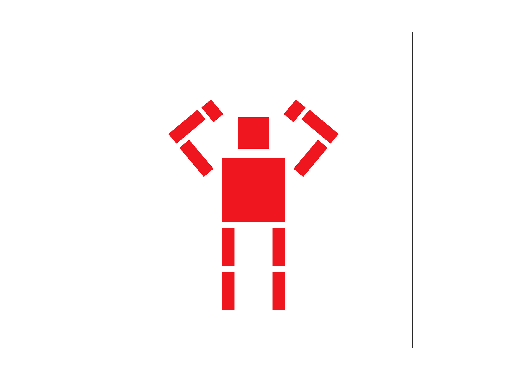

Overview
Give a high-level overview of what you implemented in this project. Think about what you've built as a whole. Share your thoughts on what interesting things you've learned from completing the project.
Section I: Rasterization
Part 1: Rasterizing single-color triangles

|

|

|

|
How to rasterize triangles
Given the coordinates of the three vertices of a triangle, we iterate over every pixel in the rectangle bounding box of the triangle, check if that pixel lies within the bounds using the three line test, and color it in the sample buffer if it does.
Efficiency
In the naive implementation of our triangle rasterization algorithm, we first find the coordinates of bounding box by finding the min x, y and max x, y coordinates among the three coordinates of the traingle's vertices. Then, we iterate only over the pixels within this bounding box and apply the three line test to them. Thus, our algorithm is no worse than one that checks each sample within the bounding box of the triangle
Special Optimizations
for loop go fast 🏃
Part 2: Antialiasing triangles

|

|

|

|
Supersampling - Overview
Instead of sampling only once per pixel, our supersampling algorithm samples multiple times per pixel, horizontally and vertically, according to the sample rate. The color at each sample is recorded in the high-resolution sample buffer, which is eventually downsampled into the framebuffer using average pooling.
Why Supersampling is Useful
Supersampling allows us to account for colors present in different sections within a pixel, providing a clear advantage over regular sampling which only considers one point per pixel.
Modifications to the Rasterization Pipeline
To modify our rasterization pipeline to support supersampling, we first changed methods set_sample_rate and fill_pixel to factor in the sample rate to calculate the new buffer size. Then, we tweaked rasterize_line to rasterize each pixel sample_rate times in the sample buffer (as the sample color because lines don't need to be antialised), and changed rasterize_triangle to record the colors of sample_rate equally separated subpixels within each pixel into the sample buffer. Finally, we updated method resolve_to_framebuffer to average pool each group of sample_rate sample buffer pixels into one framebuffer pixel.
Supersampling for Antialising
When we downsample our supersamples using average pooling, we account for the ratios of different colors present within each pixel, enabling antialising.
Alternate Antialising Methods
In addition, we also attempted to super sample using random sampling within a single pixle. We have created a seperate function "rasterize_triangle_random_supersampling" and tested it out by calling it in place of the regular restarized_triangle. However, despite the reduction of jaggies, for some reason the color was a bit off. Here is a side by side comparison of a rendered image with sapling rate set to 16:

|

|
Clearly, we can see that there is an obvious reduction in jaggies, but the color was much lighter.
Part 3: Transforms
Here is an updated version of the robot, which is waving its left hand and tilting its right foot. The transforms done on the right lower leg is "translate(30 60)", "rotate(-45)", and "scale(.2 .6). The transforms done on the left hand is "translate(-60 -30)", "rotate(45)", and "scale(.6 .2). Below is an image of what the robot looks like:
Section II: Sampling
Part 4: Barycentric coordinates
The Barycentric coordinates describes a point's relationship with the triangle that it resides in. The Barycentric coordinate of a point (x, y) is expressed as (a, b, c), where a + b + c = 1 and Aa + Bb + Cc = (x, y), where A, B, C are the coordinates of the three vertices that surrounds (x, y). (a, b, c) can be interpreted as the proportion of each vertex A, B, and C shares with (x, y). It is commonly used in texture mapping, where given a triangle, we can use the Barycentric coordinates of each pixel within the triangle to determine what texture the pixel should have.
The following image shows a simple example for barycentric coordinates. Each vertex in the triangle has a different color, and we can create this ombre effect by calculating the barycentric coordinates of each pixel within the triangle, and color the pixel using weighted sum of the color of the three coordinates, where the weights are the barycentric coordinates.

Here is a color circle rendered using barycentric coordinates:

Part 5: "Pixel sampling" for texture mapping
Pixel Sampling - Overview
Pixel sampling refers to representing an image by taking point samples at unit distances. To perform texture mapping, we wrote our pixel sampling method to iterate over pixels in the original image, find their corresponding coordinates in the texture map, then sample from the associated location in the texture map.
Nearest vs Bilinear Sampling
Nearest sampling returns the color of the pixel closest to the given sample, wherest bilinear sampling computes the color as a linear combination of the colors of the four closest pixels, weighted by their distance to the sample. The difference is that nearest sampling is faster due to its single memory access while bilinear sampling is more accurate as it accounts for the colors of more neighboring pixels.
Showcase

|

|

|

|
Comments
Visually, nearest sampling appears to be more choppy than bilinear sampling. This is indicative of the fact that bilinear sampling performs much better than nearest sampling when an image has granular details with multiple colors within each pixel.
Part 6: "Level sampling" with mipmaps for texture mapping
Level sampling is an optimization method that deals with the case where the sampling frequency in screen space is very different from the sampling frequency in texture space. When the screen space is very small compared to the texture space (for example when we shrink the image down to only one pixel), it is inefficient to generate a high resoluted image. Therefore, we generate a higher leveled image with a coarser level of detail, in order to reduce rendering complexity. The higher the level, the lower the resolution of the generated image.
The way we determine which level the image should be, we compute the sampling frequency by first taking a point (x, y) in the screen space, and look at its right and upper neighbor pixel, (x+1, y) and (x, y+1) and how far these three pixels are from each other in the texture space. The way we measure how far they are from each other is by first computing the barycentric coordinates of the three points, and then using the barycentric coordinates to compute the distance that the two neighboring points have against the original point in the texture space using Pythagorean theorem.
We implemented two level sampling methods: bi-linear sampling and nearest sampling. For nearest sampling, we look at the two distances we calculated, take the maximum, round it to the nearest integer and make it our level number, and sample using that level map. For bi-linear sampling, we look at the two distances we calculated, take the maximum, and take a weighted sum of each sample from the two sandwiching level maps.
Blow are some different combination of level sampling and point sampling methods. On the right corner you can see the zoomed in image in detail.
Here is the original image:


|

|

|

|
Section III: Art Competition
If you are not participating in the optional art competition, don't worry about this section!